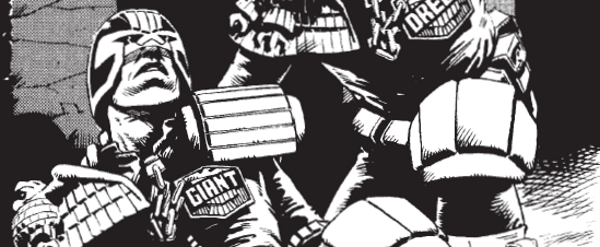

Son of John 'Giant' Clay, of the Harlem Heroes, compatriot of Dredds, father of Judge Giant, Jnr. (from an unjudicial liason) and murdered by Orlok during the Block Mania crisis. He has since appeared in flashback tales.
Art by Steve Dillon
| Story Title | Parts | Pages | w indicates a wraparound coverCovers | Year(s) | Issues | Writer | Artist | Colourist | Letterer |
|---|---|---|---|---|---|---|---|---|---|
From Judge Dredd[The Academy of Law] | 2 | 9 | 0 | 1977 | Reprints: JDA'8527-28 | John Wagner | 1: Ian Gibson 2: Mike McMahon various | [b&w] | 1: Bill Nuttall 2: Tony Jacob various |
From Judge Dredd[Billy Jones] | 1 | 4 | 0 | 1977 | Reprints: 2KA'8438 | John Wagner | Ian Gibson | [b&w] | Tony Jacob |
From Judge Dredd[The Mega-City 5000] | 2 | 9 | 0 | 1977 | 40-41 | John Wagner | 1: Bill Ward 2: Brian Bolland various | [b&w] | Tony Jacob |
From Judge DreddBlock War | 1 | 6 | Brian Bolland 1 | 1980 | 182 | Kelvin Gosnell Alan Grantvarious | Brian Bolland | <-- pp1-2, [b&w] | Tom Frame |
From Judge DreddThe Hotdog Run | 3 | 18 | 233: Ron Smith 1 | 1981 | 233-235 | Alan Grant John Wagnervarious | Ron Smith | <-- 4pp, [b&w] | Tom Frame: 1‑2 P.L.: 3 various |
From Judge DreddBlock Mania | 9 | 55 | 236 [w]: Brian Bolland 240: Brian Bolland 242: Brian Bolland 2,1w | 1981 | 236-244 | Alan Grant John Wagnervarious | Mike McMahon: 1‑2 Ron Smith: 3‑6 Steve Dillon: 7‑8 Brian Bolland: 9 various | <-- 14pp, [b&w] | Tom Frame: 1‑7 Steve Potter: 8‑9 various |
From Whatever Happened to...John Giant Clay? | 1 | 6 | 0 | 2004 | Reprints: M388 (supplement)M216 | Gordon Rennie | Rufus Dayglo | [b&w] | Tom Frame |
From Judge DreddCold Case | 1 | 6 | 0 | 2020 | 2169 | Kenneth Niemand | Tom Foster | Chris Blythe | Annie Parkhouse |
| Features | |||||||||
| Judge Giant: In Memorium | 1 | 2 | 0 | 1982 | JDA'83 | editorial | reprints | [b&w] | n/a |
From 2000 I.D.Judge Giant | 1 | 1 | 0 | 1990 | 710 | editorial | Paul Marshall | <-- | n/a |
| year | episodes | pages |
| 1977 | 5 | 22 |
| 1978 | 0 | 0 |
| 1979 | 0 | 0 |
| 1980 | 1 | 6 |
| 1981 | 12 | 73 |
| 1982 | 0 | 0 |
| 1983 | 0 | 0 |
| 1984 | 0 | 0 |
| 1985 | 0 | 0 |
| 1986 | 0 | 0 |
| 1987 | 0 | 0 |
| 1988 | 0 | 0 |
| 1989 | 0 | 0 |
| 1990 | 0 | 0 |
| 1991 | 0 | 0 |
| 1992 | 0 | 0 |
| 1993 | 0 | 0 |
| 1994 | 0 | 0 |
| 1995 | 0 | 0 |
| 1996 | 0 | 0 |
| 1997 | 0 | 0 |
| 1998 | 0 | 0 |
| 1999 | 0 | 0 |
| 2000 | 0 | 0 |
| 2001 | 0 | 0 |
| 2002 | 0 | 0 |
| 2003 | 0 | 0 |
| 2004 | 1 | 6 |
| 2005 | 0 | 0 |
| 2006 | 0 | 0 |
| 2007 | 0 | 0 |
| 2008 | 0 | 0 |
| 2009 | 0 | 0 |
| 2010 | 0 | 0 |
| 2011 | 0 | 0 |
| 2012 | 0 | 0 |
| 2013 | 0 | 0 |
| 2014 | 0 | 0 |
| 2015 | 0 | 0 |
| 2016 | 0 | 0 |
| 2017 | 0 | 0 |
| 2018 | 0 | 0 |
| 2019 | 0 | 0 |
| 2020 | 1 | 6 |
| 2021 | 0 | 0 |
Comic strip data (excludes other content):